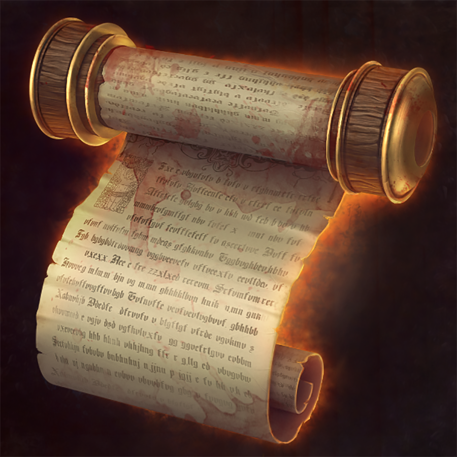

Tarefa: Cause a morte de 2 jogadores, direta ou indiretamente. Recompensa: 25 AM.
Tarefa: Doe a outro jogador ou a outro grupo que você não tenha ligação 4 consumíveis. Recompensa: 10 AM.
Tarefa: Passe pelos próximos 2 Lordes sem ter morrido. Recompensa: 20 AM.
Tarefa: Cace e mate Ryme, Guardião da Vastidão. Recompensa: 30 AM.
Tarefa: Cace e mate Geneva Lage, Guardiã das profundezas. Recompensa: 30 AM.
Tarefa: Cace e mate Belliphysoot, guardião do imensurável. Recompensa: 30 AM.
Tarefa: Encontre um Oásis. Recompensa: 10 AM.
Tarefa: Cause a morte do Elementarista, caso não tenha um na jornada ou seja você, receba outra missão. Recompensa: 20 AM.
Tarefa: Cause a morte do Combatente, caso não tenha um na jornada ou seja você, receba outra missão. Recompensa: 20 AM.
Tarefa: Cause a morte do Adepto, caso não tenha um na jornada ou seja você, receba outra missão. Recompensa: 20 AM.
Tarefa: Cause a morte do Guardião, caso não tenha um na jornada ou seja você, receba outra missão. Recompensa: 20 AM.
Tarefa: Cause a morte do Protetor, caso não tenha um na jornada ou seja você, receba outra missão. Recompensa: 20 AM.
Tarefa: Cause a morte do Caçador, caso não tenha um na jornada ou seja você, receba outra missão. Recompensa: 20 AM.
Tarefa: Cause a morte do Atroz, caso não tenha um na jornada ou seja você, receba outra missão. Recompensa: 20 AM.